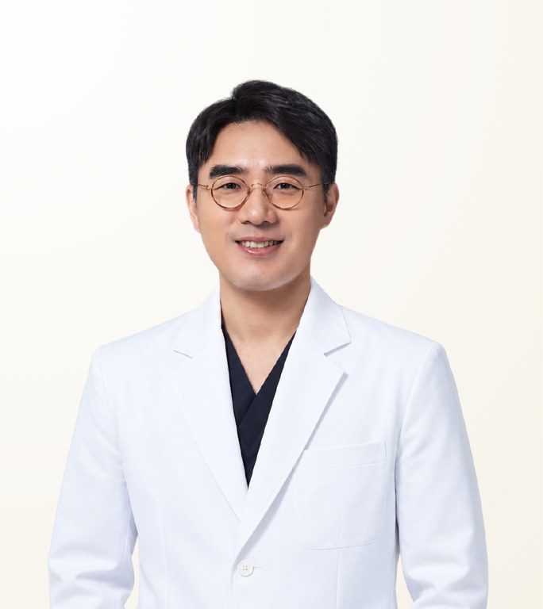

แพทย์ที่ผ่านการตรวจสอบโดย STMSTYLE
อี ซึงโฮ
Lee Seungho · 이승호
คลินิกศัลยกรรมบีที · แพทย์เฉพาะทางโสต ศอ นาสิก (หู คอ จมูก)
- ผ่าตัดจมูกแก้ไขโดยวิเคราะห์สาเหตุ
- แก้ไขจมูกหด
- แก้ไขการหายใจติดขัดและเสริมสร้างเชิงการทำงาน
- ประสบการณ์
- ประสบการณ์กว่า 20 ปี
- เคสผ่าตัด/หัตถการ
- ประสบการณ์ทางคลินิกอย่างกว้างขวางกว่า 20 ปี พร้อมเคสผ่าตัดจมูกแก้ไขก่อนและหลังผ่าตัด รีวิว และตัวอย่างการแก้ไขตามสาเหตุจำนวนมากบนเว็บไซต์ทางการของคลินิกบีที
- ระยะพำนักที่แนะนำ
- มาตรฐาน 8 วัน 7 คืน ตามคำแนะนำทางการใช้เวลา 7–10 วันสำหรับการตัดไหมและการฟื้นตัว ปรับตามสภาพ
เกี่ยวกับแพทย์
นพ.อี ซึงโฮ เป็นแพทย์เฉพาะทางโสต ศอ นาสิก และผู้อำนวยการคลินิกศัลยกรรมบีที กรุงโซล เป็นที่รู้จักด้านการผ่าตัดจมูกแก้ไขโดยวิเคราะห์สาเหตุ การแก้ไขจมูกหดและการหายใจติดขัด และการเสริมสร้างจมูกเชิงการทำงาน แพทย์มีประสบการณ์กว่า 20 ปี ใช้ CT 3 มิติและกล้องส่องโพรงจมูกค้นหาว่าเหตุใดการผ่าตัดครั้งก่อนจึงล้มเหลว แล้วเสริมสร้างทั้งรูปทรงและการหายใจไปพร้อมกัน
Case Expertise
ผ่าตัดจมูกแก้ไขโดยวิเคราะห์สาเหตุ
การผ่าตัดแก้ไขที่เริ่มจากการค้นหาว่าเหตุใดการผ่าตัดครั้งก่อนจึงล้มเหลว ตรวจสอบวัสดุและวิธีที่ใช้ แผลเป็นและพังผืด ความหนาของผิว และการรองรับของผนังกั้นจมูก แล้วตรวจกระดูกจมูก ผนังกั้น เทอร์บิเนตล่าง และลิ้นจมูกด้วย CT 3 มิติและกล้องส่อง ก่อนกำหนดขอบเขตการเสริมสร้าง
แก้ไขจมูกหด
แก้ไขจมูกที่ยกขึ้นหรือสั้นลงเนื่องจากเนื้อเยื่อรอบวัสดุเทียมหดตัว นำวัสดุเทียมออกและคลายพังผืดก่อนจัดเรียงกระดูกอ่อนใหม่ พร้อมสร้างความยาวและการรองรับที่ขาดหายจากเนื้อเยื่อที่จำเป็น
แก้ไขการหายใจติดขัดและเสริมสร้างเชิงการทำงาน
แก้ไขการหายใจติดขัดที่เกิดหลังผ่าตัด หรือผนังกั้นจมูกคดและลิ้นจมูกตีบที่มีอยู่เดิม โดยเสริมสร้างโครงสร้างของทางเดินหายใจไปพร้อมกับรูปทรง เพื่อฟื้นฟูการหายใจที่สบาย
หัตถการอื่นที่ให้บริการ
วัสดุและอุปกรณ์ที่ใช้
วิดีโอ
ปรัชญาในการรักษา
มุมมองของแพทย์คือ การผ่าตัดจมูกแก้ไขไม่ได้เริ่มจากการสร้างรูปทรงที่ต้องการขึ้นใหม่ แต่เริ่มจากการระบุอย่างแม่นยำว่าเหตุใดการผ่าตัดครั้งก่อนจึงล้มเหลว และเหลือเนื้อเยื่อใดอยู่บ้าง แพทย์ใช้ CT 3 มิติและกล้องส่องโพรงจมูกตรวจสอบกระดูกจมูก ผนังกั้น ความเบี้ยว โพรงจมูก และทางเดินหายใจ และแยกการหดรั้ง พังผืด การรองรับปลายจมูกที่ลดลง ปัญหาวัสดุเทียม และการหายใจติดขัดเป็นคนละปัญหา หลังอธิบายภาพที่ผู้ป่วยต้องการและขอบเขตที่เป็นไปได้จริงอย่างครบถ้วน จึงกำหนดวัสดุและขอบเขตการเสริมสร้าง เพื่อฟื้นฟูทั้งเส้นจมูกที่กลมกลืนกับใบหน้าและการหายใจที่สบาย
— อี ซึงโฮ
มุมมองจาก STMSTYLE
STMSTYLE มองว่า นพ.อี ซึงโฮ เป็นแพทย์หู คอ จมูก ที่ในการผ่าตัดจมูกแก้ไข ไม่เพียงสร้างเส้นสายที่มองเห็นขึ้นใหม่ แต่ค้นหาจากภายในจมูกว่าเหตุใดการผ่าตัดครั้งแรกจึงล้มเหลว แพทย์แยกสาเหตุ ทั้งการหดรั้ง ปลายจมูกตก วัสดุเทียมเบี้ยวหรือทะลุเห็น จมูกบีบ และการหายใจติดขัดหลังผ่าตัด แล้วเลือกเนื้อเยื่อและวิธีเสริมสร้างให้เหมาะกับแต่ละกรณี STMSTYLE เห็นว่าแพทย์เป็นตัวเลือกที่น่าสนใจเป็นพิเศษสำหรับผู้ป่วยต่างชาติที่กระดูกอ่อนเหลือน้อยจากการผ่าตัดหลายครั้ง หรือต้องการแก้ไขทั้งรูปทรงและการหายใจไปพร้อมกัน
STMSTYLEประวัติการศึกษาและการทำงาน
ดูประวัติทั้งหมด
การศึกษา
- แพทยศาสตรบัณฑิต คณะแพทยศาสตร์ มหาวิทยาลัยอินฮา
ใบอนุญาตและวุฒิบัตร
- แพทย์เฉพาะทางโสต ศอ นาสิก (วุฒิบัตรโสต ศอ นาสิกวิทยา ประเทศเกาหลี)
ประสบการณ์การทำงาน
- ผู้อำนวยการ คลินิกศัลยกรรมบีที
- อาจารย์พิเศษ แผนกหู คอ จมูก โรงพยาบาลมหาวิทยาลัยอินฮา
- อดีตผู้อำนวยการ คลินิกโค แอนด์ อีเอ็นที
- อดีตผู้อำนวยการ DA ศัลยกรรม
- อดีตผู้อำนวยการ เออร์เบินศัลยกรรม
สมาคมวิชาการ
- สมาชิกสามัญ สมาคมโสต ศอ นาสิกแห่งเกาหลี
- สมาชิกสามัญ สมาคมศัลยกรรมตกแต่งและเสริมสร้างใบหน้าแห่งเกาหลี
- สมาชิกสามัญ สมาคมจมูกวิทยาแห่งเกาหลี
คำถามที่พบบ่อย
นพ.อี ซึงโฮ เชี่ยวชาญการผ่าตัดจมูกแก้ไขหรือไม่?
ใช่ นพ.อี ซึงโฮ เป็นที่รู้จักด้านการผ่าตัดจมูกแก้ไขโดยวิเคราะห์สาเหตุ แพทย์ใช้ CT 3 มิติและกล้องส่องโพรงจมูกแยกสาเหตุ เช่น การหดรั้ง ปลายจมูกตก ปัญหาวัสดุเทียม หรือการหายใจติดขัด แล้วเลือกวิธีเสริมสร้างที่ต่างกันตามสาเหตุ แผนสุดท้ายกำหนดหลังการปรึกษาแบบพบตัว
นพ.อี ซึงโฮ แก้ไขจมูกที่หายใจติดขัดหลังผ่าตัดได้หรือไม่?
ได้ ในฐานะแพทย์หู คอ จมูก เฉพาะทาง นพ.อี ซึงโฮ แก้ไขการหายใจติดขัดหลังผ่าตัด รวมถึงผนังกั้นจมูกคดและลิ้นจมูกตีบ โดยเสริมสร้างโครงสร้างทางเดินหายใจไปพร้อมกับรูปทรงจมูก
นพ.อี ซึงโฮ ใช้วัสดุอะไรในการเสริมจมูก?
นพ.อี ซึงโฮ เลือกใช้ซิลิโคน กระดูกอ่อนผนังกั้นจมูก กระดูกอ่อนหู กระดูกอ่อนซี่โครงตนเอง หรือหนังแท้และพังผืดตนเอง ตามความเสียหายจากการผ่าตัดครั้งก่อนและแรงรองรับที่ต้องการ แพทย์ยังให้บริการเสริมจมูกแบบไม่ใช้วัสดุเทียมด้วย
หากผ่าตัดจมูกแก้ไขกับ นพ.อี ซึงโฮ ควรพักที่เกาหลีนานเท่าใด?
ระยะพำนักมาตรฐานสำหรับการผ่าตัดกับ นพ.อี ซึงโฮ คือ 8 วัน 7 คืน ตามคำแนะนำทางการของคลินิก ใช้เวลา 7–10 วันสำหรับการตัดไหมและการฟื้นตัว และปรับตามสภาพของแต่ละบุคคล
นพ.อี ซึงโฮ ผ่าตัดเองหรือไม่ และปรึกษาผ่าน STMSTYLE ได้หรือไม่?
นพ.อี ซึงโฮ เป็นผู้ผ่าตัดด้วยตนเอง STMSTYLE ทำงานร่วมกับคลินิกศัลยกรรมบีทีและช่วยประสานการปรึกษาเบื้องต้น ตารางนัด และเงื่อนไขกับโรงพยาบาลจากกรุงเทพฯ การตัดสินใจขั้นสุดท้ายทำผ่านการปรึกษาแบบพบตัว
แหล่งที่มาของข้อมูล
ดูแหล่งที่มาและบันทึกการตรวจสอบ
| รายการ | แหล่งที่มา | วันที่ตรวจสอบ |
|---|---|---|
| วุฒิบัตร การศึกษา ประวัติการทำงาน และสมาคมวิชาชีพ | หน้าแนะนำทีมแพทย์อย่างเป็นทางการของคลินิกศัลยกรรมบีที | 2026-09-08 |
| ผลงานวิจัยตีพิมพ์ 4 ฉบับ (2006–2008) | European Archives of Oto-Rhino-Laryngology (2008), The Laryngoscope (2007), วารสารโสต ศอ นาสิกแห่งเกาหลี (2006, 2008) | 2026-09-08 |
| แนวทางการผ่าตัดจมูกแก้ไข CT 3 มิติ กล้องส่องโพรงจมูก และระยะฟื้นตัว | หน้าข้อมูลการผ่าตัดอย่างเป็นทางการของคลินิกศัลยกรรมบีที | 2026-09-08 |
| วิดีโอให้คำปรึกษาของแพทย์ | วิดีโอเผยแพร่บน YouTube | 2026-09-08 |
| แนวทางการรักษาและการดูแลผู้ป่วย | การตรวจสอบโดยตรงของ STMSTYLE ผ่านการพบแพทย์ การปรึกษา และการประสานงานผู้ป่วย | 2026-09-08 |
บันทึกการตรวจสอบ · 2026-09-08
STMSTYLE ตรวจสอบข้อมูลของ นพ.อี ซึงโฮ ผ่านความร่วมมือระยะยาว การพบแพทย์และการปรึกษาโดยตรง การประสานงานผู้ป่วย และการตรวจสอบเทียบกับโปรไฟล์ทางการ ผลงานวิจัย และข้อมูลแพทย์จากแหล่งภายนอก